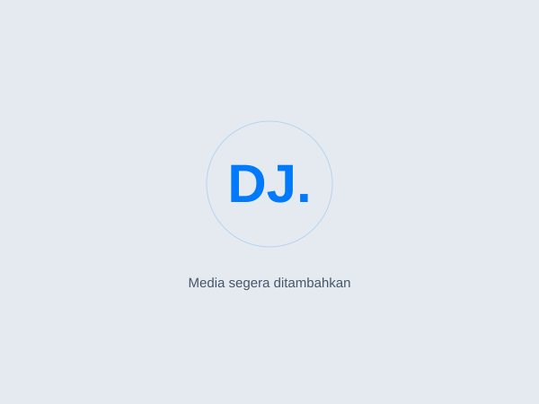

MASA SEKOLAH DASAR
01AWAL PERJALANAN
Sekolah Dasar
Langkah pertama dalam perjalanan pendidikan.
HELLO WORLD, I'M
Mahasiswa Teknik Informatika
& Teknik Komputer & Jaringan
Dari jaringan yang menghubungkan hingga aplikasi yang menghadirkan solusi. Saya mengeksplorasi Full-Stack Development, DevOps, dan Linux dengan rasa ingin tahu yang terus tumbuh.

Always learning. Always building.
Satu ide, satu langkah, satu kemungkinan baru.
Mahasiswa di Institut Teknologi Sains Bandung, dengan latar belakang Teknik Komputer dan Jaringan serta fokus pada MikroTik, server Linux, dan implementasi AI lokal.
01 / My journey
Perjalanan belajar yang menjadi fondasi untuk terus bertumbuh bersama teknologi.
AWAL PERJALANAN
Langkah pertama dalam perjalanan pendidikan.
MELANJUTKAN LANGKAH
Melanjutkan pendidikan dan memperluas pengetahuan.
FONDASI TEKNIS
Latar belakang pendidikan di bidang komputer dan jaringan.
S1 TEKNIK INFORMATIKA
Mendalami informatika dan terus mengeksplorasi teknologi.
02 / What keeps me curious
Mengeksplorasi cara sebuah aplikasi dibangun, dijalankan, dan dihubungkan.
A little process.
A lot of possibilities.
Video highlight segera ditambahkan.
Catatan visual tentang proses belajar, eksplorasi, dan ide yang sedang tumbuh.
Tertarik pada proses membangun aplikasi web, dari antarmuka yang digunakan hingga logika di baliknya.
FRONTEND · BACKEND · WEB
Mengeksplorasi hubungan antara aplikasi dan infrastruktur, dengan fondasi administrasi jaringan MikroTik.
INFRASTRUCTURE · MIKROTIK · AUTOMATION
Manajemen server Linux serta eksplorasi dan implementasi model kecerdasan buatan di lingkungan lokal.
LINUX · SERVER · LOCAL MODELS
03 / Learning & experience
Bagian dari perjalanan mengembangkan kemampuan melalui program belajar dan internship.
LEARNING PROGRAM
Pencapaian dalam perjalanan pengembangan kompetensi teknologi.
Sertifikat segera ditambahkanLEARNING PROGRAM
Bagian dari komitmen untuk belajar dan meningkatkan kemampuan.
Sertifikat segera ditambahkanDi balik sebuah koneksi.
DOKUMENTASI MAGANG SEGERA DITAMBAHKANPENGALAMAN MAGANG
Bagian dari perjalanan belajar melalui pengalaman di lingkungan kerja.
Pengalaman membuka perspektif.
DOKUMENTASI MAGANG SEGERA DITAMBAHKANPENGALAMAN MAGANG
Kesempatan untuk mengenal praktik kerja dan mengembangkan pemahaman teknis.